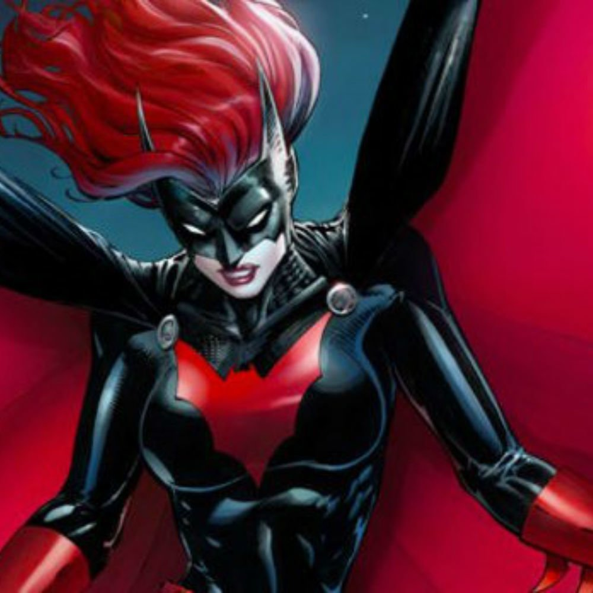
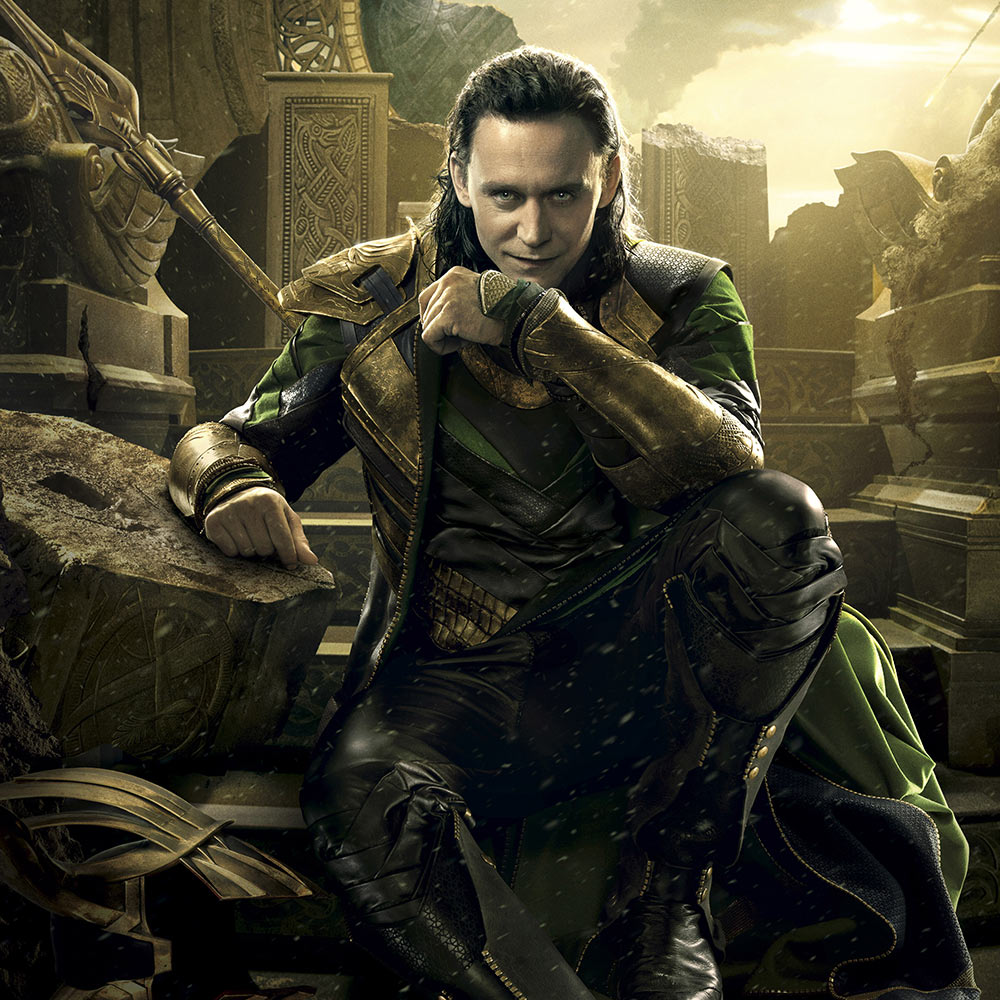
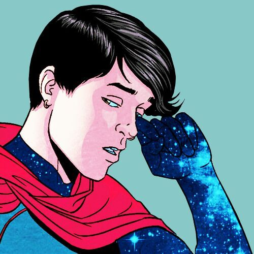
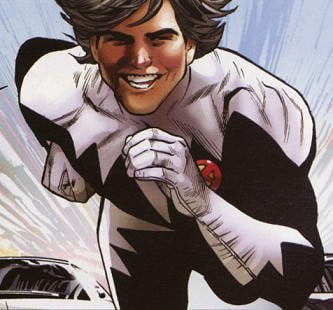
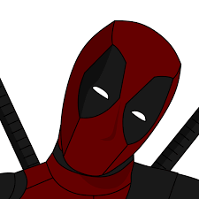
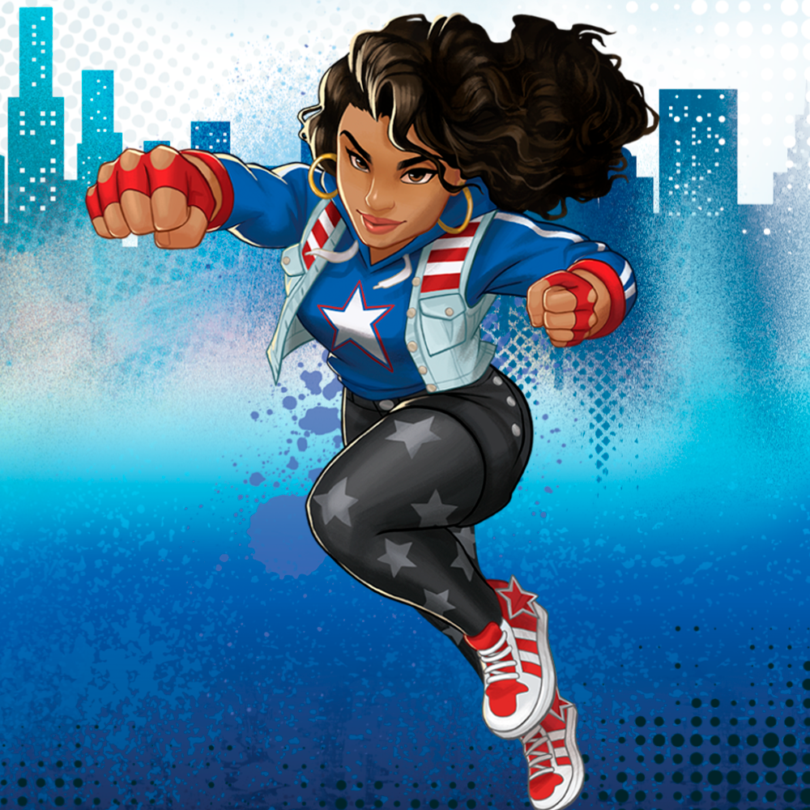
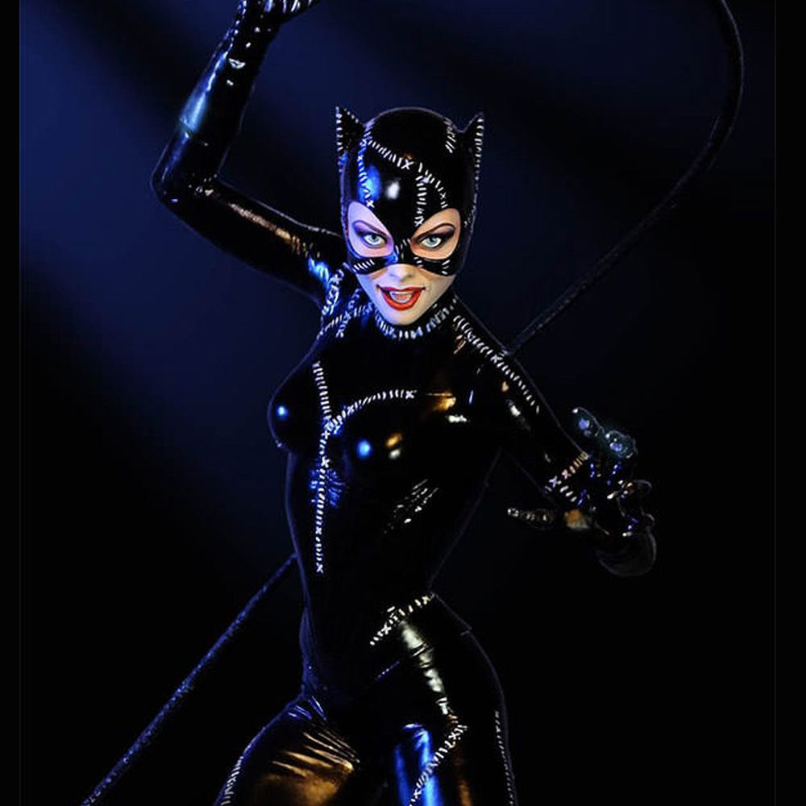

Batwoman
Sexualidade: Lésbica
História: Kathy Kane se tornou a famosa super-heroína de Gotham City à medida que começou a aparecer nos quadrinhos do Batman para ajudar a combater o crime na região.
Acessórios e Habilidades: Super força, resistência, velocidade e agilidade, Voo, excelente artista marcial, excelente detetive, grande tolerância a dor, resistência a toxinas, a flashes de luz e hipnose, manipulação de eletricidade e luz através de equipamentos.
Loki
Sexualidade: Pansexual
Identidade de Gênero: gênero-fluido
História: Loki Laufeyson é o filho da Rainha Farbauti e do Rei Laufey,líder dos Gigantes de Jotunheim. Ele nasceu pequeno e foi um constrangimento para seus pais,e foi segregado de outros gigantes. Após sua segregação entre os gigantes de gelo, loki foi mandado a asgard onde se tornou o deus da trapaça.
Poderes, Acessórios e Habilidades: Feitiçaria, Longevidade, Resistência, Mudança de forma, Telecinese, Telepatia, Força, Energia mística, ilusão, transmutação e teletransporte.
Wiccano
Sexualidade: Gay
História: Billy é filho de Jeff e Rebecca Kaplan. Porém, sua alma tem uma origem um pouco confusa. Antes de nascer, Billy e seu irmão Thomas eram filhos de Wanda Maximoff e Visão. Billy sempre sofreu na escola devido a sua sexualidade e ao seu gosto por super-heróis. Uma vez, envergonhado, ele acabou se encontrando com a própria Feiticeira Escarlate, ainda sem saber que esta era sua “mãe”. Ela lhe encorajou a demonstrar a pessoa que era por dentro e enfrentar seus medos.
Poderes, Acessórios e Habilidades: Invocar elementos da natureza, realizar teletransporte, levitar, gerar campos de força e construtos sólidos, se curar e prever o futuro. projeção astral, telepatia e telecinese.
Estrela Polar
Sexualidade: Na Marvel, o primeiro super-herói gay assumido
História: Jean-Paul Beaubier é canadense e, é o irmão gêmeo, da mutante Aurora. Aos dezoito anos tornou-se esquiador profissional e foi convidado por James McDonald Hudson para ser integrante da Tropa Alfa(Os Vingadores Canadenses), lá ele assumiu sua homosexualidade e se casou com um homem.
Poderes, Acessórios e Habilidades: Mutante com poderes de supervelocidade, voo e emissão de luz.
Deadpool
Sexualidade: Pansexual
História: De acordo com suas próprias lembranças que já apareceram nos quadrinhos, ele nasceu em Ohio, Estados Unidos, mas, devido a uma infância super traumática, passou a maior parte de sua juventude vagando pelo país. Aparentemente, Wade teve uma infância preenchida com violência familiar e mortes, por isso ele escolheu ficar em constante movimento, viajando pelo país e mudando sua identidade para fugir dos problemas. Na adolescência, Wade decidiu ganhar a vida como mercenário e, para isso, treinou diferentes usos de armas. Ele ofereceu seus serviços como assassino de aluguel, aceitando apenas missões onde a vítima “merecia” a morte, seguindo um critério pessoal que ele mesmo criou. Essa fixação por mudanças de identidade é uma solução para suas missões fracassadas , ele chegou a fazer cirurgias plásticas para mudar de rosto e recomeçar. Depois de um tempo na vida de mercenário, Wade foi diagnosticado com câncer em fase terminal e acabou se tornando voluntário no Projeto Arma X, usando sua nova identidade com cidadania canadense. A partir desse momento, ele seria Deadpool para sempre.
Poderes, Acessórios e Habilidades: Regeneração Celular(a segunda melhor em toda a marvel, somente atrás do próprio hulk) e Devido ao projeto Arma X, ele teve sua força aumentada a um nível sobre humano, também teve seus reflexos melhorados e também é um lutador excepcional com armas e espadas.
America Chavez
Sexualidade: Lésbica
História: Criada por suas mães, Amália e Elena, no chamado Paralelo Utópico, uma dimensão que ficava fora da continuidade do espaço-tempo, convivendo ao lado do Wiccano, mas quando tinha apenas seis anos, Chavez viu suas mães se sacrificam para salvar o Paralelo Utópico, e um dia, determinada a provar que poderia ser uma heroína, America Chavez deixou sua realidade, passou a viajar pelas dimensões e adotou o nome de Miss America, se juntando aos jovens vingadores.
Poderes, Acessórios e Habilidades: Força e velocidade sobre-humanos, capacidade de voar, invulnerabilidade: America Chavez é a prova de balas e pode até sobreviver no vácuo do espaço, criação de portais, que a permitem viajar por diferentes realidades e pelo tempo.
Mulher Gato
Sexualidade: Bissexual
História: Selina Kyle era órfã, onde teve uma vida miserável a qual tinha que se virar sozinha e fazer o que fosse necessário para sobreviver. Ao tornar-se adulta, tornou-se uma garota de programa. Mais tarde, provavelmente influenciada pelo surgimento de Batman, Selina decidiu mudar de vida, assumindo uma vida dupla, onde de dia era Selina e de noite era Mulher-Gato, uma habilidosa e sensual ladra de joias.
Poderes, Acessórios e Habilidades: Não tem superpoderes, suas habilidades são todas voltadas para o seus reflexos, devido sua experiência com artes marciais, tornando-a uma excelente lutadora, e seu acessório mais conhecido é seu chicote.